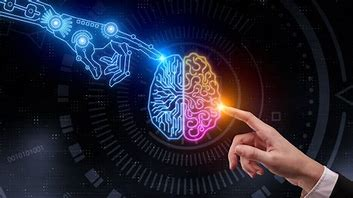
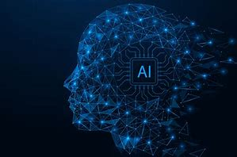
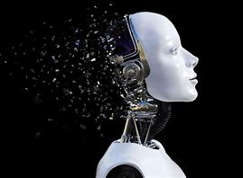
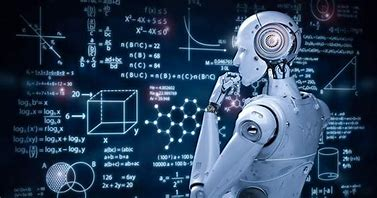

Zakupy i reklamy online Sztuczna inteligencja jest szeroko stosowana do dostarczania spersonalizowanych rekomendacji podczas zakupów online, np. na podstawie historii wyszukiwań i zakupów lub innych zachowań online. Jest niezwykle ważna w handlu, jeśli chodzi o optymalizację produktów, planowanie zasobów, logistykę itp.
Wyszukiwarki uczą się na podstawie ogromnych ilości danych dostarczanych przez użytkowników, aby zapewnić trafne wyniki wyszukiwania.
Smartfony wykorzystują SI do dostarczania jak najbardziej trafnych i spersonalizowanych produktów - wirtualni asystenci odpowiadają na pytania, dają rekomendacje i pomagają w organizacji codziennych zajęć stali się wszechobecni.
Oprogramowanie do tłumaczenia tekstów pisanych lub mówionych wykorzystuje sztuczną inteligencję. Dotyczy to również automatycznego tworzenia napisów.
Chociaż pojazdy autonomiczne nie są jeszcze standardem, samochody już korzystają z funkcji bezpieczeństwa opartych na SI. UE pomogła sfinansować np. VI-DAS - zautomatyzowane czujniki wykrywające możliwe niebezpieczne sytuacje i wypadki. Nawigacja jest też w dużej mierze oparta na SI.
Systemy SI mogą pomóc w rozpoznawaniu i zwalczaniu cyberataków i innych zagrożeń cybernetycznych w oparciu o ciągłe wprowadzanie danych, rozpoznawanie wzorców i śledzenie ataków.
Sztuczna inteligencja może też wykrywać fałszywe wiadomości i dezinformację, sprawdzając informacje z mediów społecznościowych, szukając niepokojących słów oraz identyfikując wiarygodne źródła online.
SI znajduje zastosowanie w procesach produkcyjnych, gdzie pomaga w optymalizacji procesów i poprawie jakości produkowanych wyrobów.
SI wykorzystywana jest w analizie danych finansowych, prognozowaniu kursów walut oraz w analizie ryzyka inwestycyjnego.
AI wspomaga projektowanie, produkcję i bezpieczeństwo pojazdów. Przykłady to autonomiczne samochody, systemy wspomagające kierowcę i optymalizacja produkcji
AI pomaga w diagnozowaniu chorób, analizie obrazów medycznych, personalizacji terapii i odkrywaniu nowych leków
Sztuczna inteligencja jest coraz bardziej obecna w sektorze finansowym, wspierając analizę ryzyka, oszczędności, obsługę klienta i wykrywanie oszustw
AI znajduje zastosowanie w branży filmowej, grach komputerowych, rekomendacjach treści i personalizacji doświadczeń użytkowników
Personalizacja ofert, rekomendacje produktów i optymalizacja procesów logistycznych
Optymalizacja tras, zarządzanie magazynami i prognozowanie popytu
Tworzenie interaktywnych materiałów edukacyjnych, personalizacja nauczania i analiza wyników uczniów
 Technologie oparte na logice rozmytej – powszechnie stosowane np. do sterowania przebiegiem procesów technologicznych w fabrykach w warunkach „braku wszystkich danych”.
Systemy eksperckie – systemy wykorzystujące bazę wiedzy (zapisaną w sposób deklaratywny) i mechanizmy wnioskowania do rozwiązywania problemów.
Maszynowe tłumaczenie tekstów – systemy tłumaczące nie dorównują człowiekowi, robią intensywne postępy, nadają się szczególnie do tłumaczenia tekstów technicznych.
Sieci neuronowe – stosowane z powodzeniem w wielu zastosowaniach łącznie z programowaniem „inteligentnych przeciwników” w grach komputerowych.
Uczenie się maszyn – dział sztucznej inteligencji zajmujący się algorytmami potrafiącymi uczyć się, podejmować decyzje bądź nabywać wiedzę.
Eksploracja danych – omawia obszary powiązanie z potrzebami informacyjnymi, pozyskiwaniem wiedzy, stosowane techniki analizy i oczekiwane rezultaty.
Rozpoznawanie obrazów – stosowane są już programy rozpoznające osoby na podstawie zdjęcia twarzy lub rozpoznające automatycznie zadane obiekty na zdjęciach satelitarnych.
Rozpoznawanie mowy i rozpoznawanie mówców – stosowane już powszechnie na skalę komercyjną.
Rozpoznawanie pisma (OCR) – stosowane już masowo np. do automatycznego sortowania listów, rozpoznawania treści życiorysów oraz w elektronicznych notatnikach.
Sztuczna twórczość – istnieją programy automatycznie generujące krótkie formy poetyckie, komponujące, aranżujące i interpretujące utwory muzyczne, które są w stanie skutecznie „zmylić” nawet profesjonalnych artystów, tak, że ci nie uznają utworów za sztucznie wygenerowane.
Generowanie obrazów – obrazy tworzone przez algorytmy komputerowe, wykorzystujące techniki uczenia maszynowego.
W ekonomii powszechnie stosuje się systemy automatycznie oceniające m.in. zdolność kredytową, profil najlepszych klientów czy planujące kampanie reklamowe. Systemy te poddawane są wcześniej automatycznemu uczeniu na podstawie posiadanych danych (np. klientów banku, którzy regularnie spłacali kredyt i klientów, którzy mieli z tym problemy).
Inteligentne interfejsy – stosowane do zautomatyzowanego zarządzania, monitorowania, raportowania oraz podjęcia prób rozwiązywania potencjalnych problemów w procesach technologicznych.
Prognozowanie i wykrywanie oszustw – przy użyciu m.in. regresji logistycznej systemy analizują zbiory danych w celu wychwytywania np. podejrzanych transakcji finansowych.
Analiza wideo w czasie rzeczywistym – znajduje zastosowanie m.in. w systemach monitoringu, systemach zarządzania ruchem samochodowym/pieszym i prognozowaniu takiego ruchu.
 